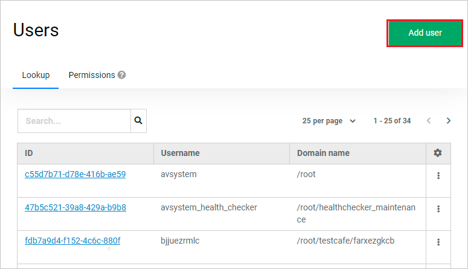
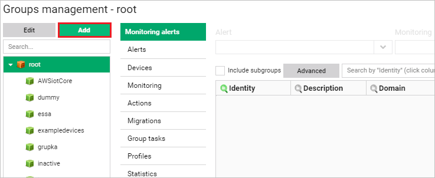
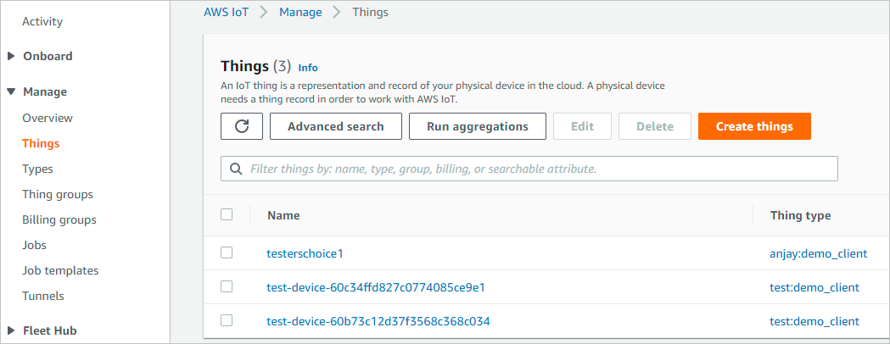
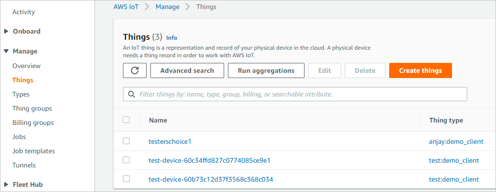
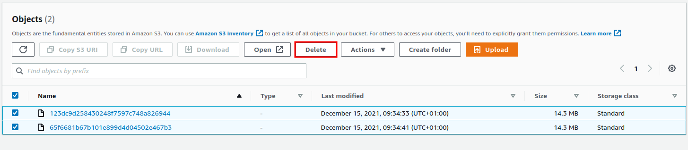

Configuring the integration#
Follow this section to integrate your AWS services with Coiote DM.
Prerequisites#
- An active AWS subscription with access to IoT Core, CloudFormation, CloudWatch, Lambda and Secrets Manager in supported regions.
- A Coiote DM user account with the awsiottenant role.
Supported regions#
- eu-central-1
- eu-north-1
- eu-west-1
- eu-west-2
- eu-west-3
- us-east-1
- us-east-2
- us-west-1
- us-west-2
If you cannot find your region, please create an issue or contact AVSystem.
Create a Coiote DM REST user#
To start integrating AWS with Coiote DM, you first need to create a user account that will be used to authorize and authenticate API calls from AWS in Coiote DM. To do that:
- Go to your Coiote DM account and from the Administration menu, select Users management.
- Select Add user and in fill in the form:

- Provide Email for new user (which will be its username) and select your domain from the Domain path drop-down list.
- Remember to switch on the User Verified and User Enabled toggle buttons.
- In the Client Roles fields, pick the CoioteDM client and awsiottenant role.

- Click Save.
- Go to the Credentials tab, type a password for your user (twice), select Set password, then confirm by clicking Set password in the pop-up.
Copy tasks and provide credentials for your device group in Coiote DM#
The Coiote DM-side configuration of the integration is located in the dedicated AWSiotCoreCertAuth device group. To complete this side of the integration, log in as the user with the awsiottenant role (only if that user was created in the Root Domain. If not, they can not access the root groups and the tasks have to be copied from the Cloud admin account.).
Then follow the steps below:
-
Go to the Device groups panel and select a group:
- For the default setting, select the AWSiotCoreCertAuth group which already contains all the necessary tasks and setting values.
- Alternatively, create a new group and migrate the required tasks and setting values:
- Select the Add button, name your group and click Add. 
- Migrate all the six tasks that have the AWS prefix in their task name:
- Select the AWSiotCoreCertAuth group and go to Group tasks, select the first AWS task and click Copy.

- In the pop-up window, click Select group in the Task target field and choose your custom integration group from the list.
- Remember to select the Domain of the user you created earlier.
- In the Actions field, select Add new task.

- Repeat the action for the remaining five tasks.
- Select the AWSiotCoreCertAuth group and go to Group tasks, select the first AWS task and click Copy.
- Migrate all the five setting values that have the AWS prefix in their task name:
- Select your custom integration group and go to Profiles, then select Copy from.

- In the pop-up window, click Select group and select the AWSiotCore group.
- Pick all the five AWS setting values from the list by checking them in the Selected column, then click Copy.

- Select your custom integration group and go to Profiles, then select Copy from.
-
Enter your AWS subscription credentials in Coiote DM:
- Go to Device groups, select your custom integration group (or the AWSiotCoreCertAuth group, depending on the previous step) and go to Profiles. Complete the AWS setting value:
- Open your command line and run the following command:
aws iot describe-endpoint --endpoint-type iot:Data-ATS --region <desired-region-for-the-integration> - Copy the returned result.

- In Coiote DM, go to the Profiles tab of your integration group and paste the result as the value for
AWSdataPlaneEndpointAddress. - Append
:8443port to the pasted value. -
Click Save.
-
Optionally, you may now add your LwM2M devices to the integration device group so that they are ready once the integration setup is complete.
Add AWS resources using the integration repository#
All the AWS-side configuration needed for the integration to work is stored in a publicly available git repository (https://github.com/AVSystem/iot-examples/tree/main/coiote-aws-iot-cloud-formation).
To add the resources needed for the integration to your AWS services:
- Go to the AWS Console page (https://console.aws.amazon.com/console/home) and sign in. Make sure that you are in the right region. From the list of services, select CloudFormation .
-
Create a new stack. Use the template of Amazon S3 URL from below and change placeholders
[REGION-NAME]to the one you use and is supported.https://coiote-aws-int-[REGION-NAME].s3.[REGION-NAME].amazonaws.com/coiote-aws-integration-cf-template.json
 4. Choose a name for the stack and provide the parameters:
- coioteDMrestUsername - username of the created CoioteDM account.
- coioteDMrestPassword - password of the created CoioteDM account.
- coioteDMrestUri - URL address and port of your Coiote DM installation.
4. Choose a name for the stack and provide the parameters:
- coioteDMrestUsername - username of the created CoioteDM account.
- coioteDMrestPassword - password of the created CoioteDM account.
- coioteDMrestUri - URL address and port of your Coiote DM installation.
 5. Finalize configuring the stack and wait for its creation to finish.
6. Once the stack is created successfully, the devices in your integration group will be automatically migrated to the AWS IoT Core.
7. To check if your integration works correctly, go to AWS IoT Core, and from the menu, select Manage > Things, then see if your devices are listed as in here:

5. Finalize configuring the stack and wait for its creation to finish.
6. Once the stack is created successfully, the devices in your integration group will be automatically migrated to the AWS IoT Core.
7. To check if your integration works correctly, go to AWS IoT Core, and from the menu, select Manage > Things, then see if your devices are listed as in here:

Next steps#
To learn how to perform operations on your devices, please see the Performing LwM2M operations chapter.
Removing the integration#
To remove the integration of AWS and Coiote DM, follow the following steps:
- In CoioteDM remove all the devices from the AWSiotCoreCertAuth group.
- Go to the CloudFormation service in AWS and select the stack that was created while setting up the integration.
- Delete the stack.

- Go to the S3 service in AWS and select the bucket with the lambda code files.
- Delete the files. 